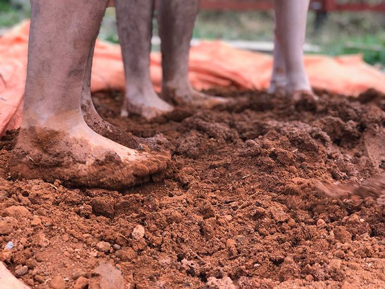

Next case
Ambev Tech → Embarkei
An onboarding app designed at Ambev Tech, later built end to end as a live SaaS.
Baldio is a two-sided marketplace that connects people who want to grow food with land sitting unused near them. It started on a windowsill, during a pandemic, in an apartment with no yard.
During the pandemic I lived in an apartment with no yard and no balcony worth the name. I wanted to grow something anyway, so I started small: a few pots by the window, arugula, cherry tomatoes and some herbs I kept alive more out of stubbornness than skill.
Watching something grow in a five-litre pot gave those flat days a rhythm. And it taught me something: you don't need much to start. What most people are missing is somewhere to put it.
When I posted about my pots, the comments weren't just "nice plants". People told me their own version: they wanted to grow food but had nowhere to do it. Small apartments, no backyard, a balcony too shaded for anything but herbs.
Another kind of comment kept showing up too, from people who had land. A backyard nobody used. A lot that had been empty for years. Two groups talking past each other on the same feeds.
The gap was never really about land. It was about trust and discovery.
How does someone find a plot nearby, know it's legitimate and reach the owner? And how does an owner hand their yard to a stranger without it becoming a hassle? That's the problem Baldio closes. In Portuguese, a baldio is a vacant lot: land nobody is using.

Search land nearby, filter by price, soil and distance, and see it on the map before reaching out.
Request a spot and agree on the details with the owner, in one thread instead of scattered DMs.
Tend your plot. Or, if it's your land, track who's renting it and what it earns each month.
Four moments from the working prototype, each one built to answer a question a real grower or landowner had.
This isn't a slideshow. Create an account, search for land, message an owner or list a plot of your own. The full prototype runs right here.
I had never written code before this project. I designed and built Baldio working with Claude: I described what each screen needed to do, we built it, and I tested it like a real user, clicking every flow, breaking things on purpose and fixing what didn't hold.
AI didn't replace the process. It meant I could go from a rough idea to something clickable in days, without a developer next to me the whole way.
Informal but real: reading the comments under my own posts to find both sides of the need, growers without land and owners with land going to waste.
Screen-by-screen flows for two very different users, the grower searching and the owner managing, inside one consistent app.
Live search and filters, a working map, per-contact chat threads and a listing flow that persists what you create.
Every flow verified end to end: sign-up through email confirmation, requests through accept and decline, a new listing through to "Your Lands".
The plot is small. What it makes possible, a neighbor who now knows another neighbor, isn't. Every city has land doing nothing and people wanting to grow something. Baldio is one concrete way to close that gap.